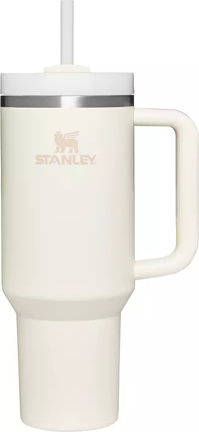

Stanley Cup:
Link to purchase:Price: $45
Everyone has a Stanley Cup now because of the convenience. It’s true, these cups are super cute, but the real reason people have been buying them is for the sippable straw. This feature enables you to effortlessly take a sip of your beverage without having to deal with the hussle of a finicky cap. Stanley Cups come in pretty much every color and contain insulated walls which will assure any drink stays cold.